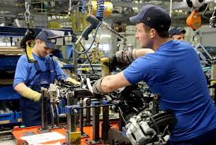
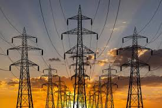

Kahulugan ng Industriya
Ang industriya ay tumutukoy sa pagproseso ng mga hilaw na materyal at paggawa ng mga produkto na kinakailangan para sa pampublikong pamilihan. Layunin nitong maiproseso ang mga hilaw na materyal upang makabuo ng mga produktong ginagamit ng tao.
Sub-Sektor ng Industriya
Pagmimina
Pagkuha at pagproseso ng mga yamang mineral tulad ng metal, di-metal, o enerhiya upang gawing tapos na produkto o bahagi ng isang yaring kalakal.

Pagmamanupaktura
Paggawa ng mga produkto gamit ang manual labor o mga makina kung saan nagkakaroon ng pisikal o kemikal na pagbabago ang mga materyales upang makabuo ng bagong produkto.

Konstruksyon
Konstruksyon - pagtatayo ng gusali, estruktura, at iba pang land improvements.
Utilities
Utilities - pagbibigay ng serbisyo tulad ng tubig, kuryente, at gas sa mga mamamayan.Kahalagahan ng Industriya
- Tumatanggap ng produkto mula sa agrikultura at serbisyo mula sa sektor ng paglilingkod
- Nagbibigay ng hanapbuhay sa maraming Pilipino
- Nagpapasok ng dolyar sa bansa
- Nakagagamit ng makabagong teknolohiya
- Gumagawa ng intermediate products
Pagkakaugnay ng Agrikultura at Industriya
Ang mga hilaw na sangkap mula sa agrikultura ay ginagamit ng industriya upang makagawa ng mga produkto. Samantala, ang mga makinarya at kagamitan mula sa industriya ay tumutulong sa mga magsasaka upang mapataas ang kanilang produksyon.
Suliranin ng Industriya
- Kakulangan sa pondo
- Kompetisyon
- Paghina ng lokal na industriya
- Demand
Mga Patakarang Pang-Ekonomiya
- Filipino First Policy
- Oil Deregulation Law (RA 8479)
- Microfinancing Policy
- Retail Trade Liberalization Act (RA 8762)
- Build-Operate-Transfer Law (RA 6957)
Mga Ahensiya ng Pamahalaan
- Department of Trade and Industry (DTI)
- Board of Investments (BOI)
- Philippine Economic Zone Authority (PEZA)
- Securities and Exchange Commission (SEC)
Karagdagang Impormasyon
Ang industriyalisasyon ay ang paggamit ng makinarya at makabagong kagamitan sa paglinang ng mga industriya at pinagkukunang yaman.
Ang sektor ng industriya ay tinatawag ding sekundaryang sektor ng ekonomiya.